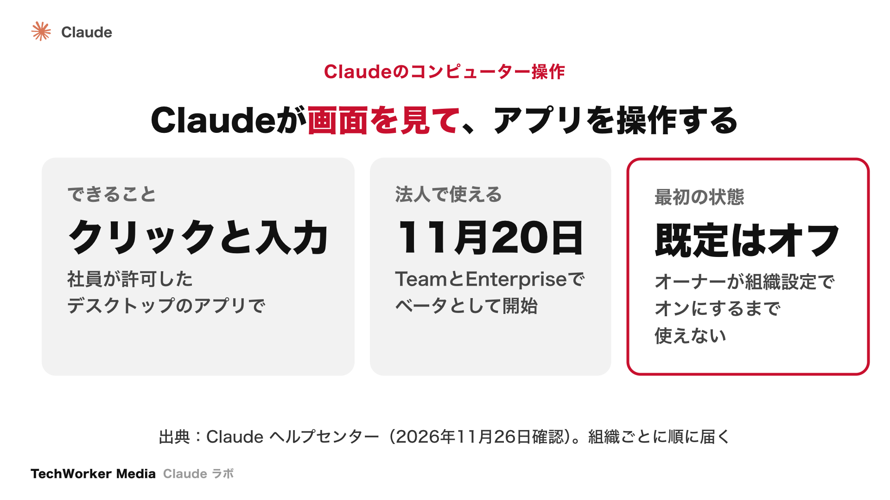
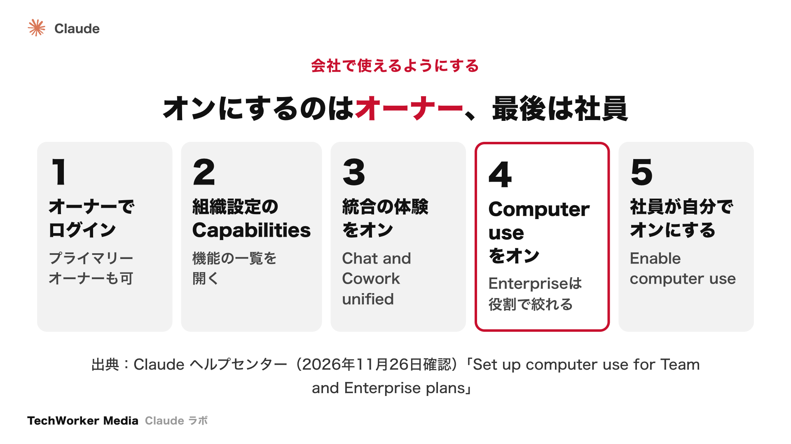
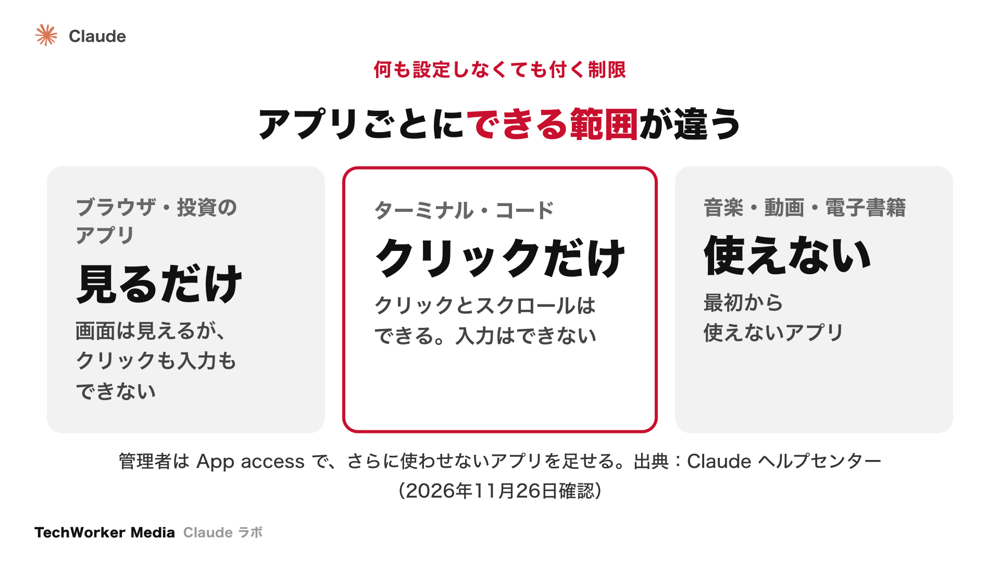
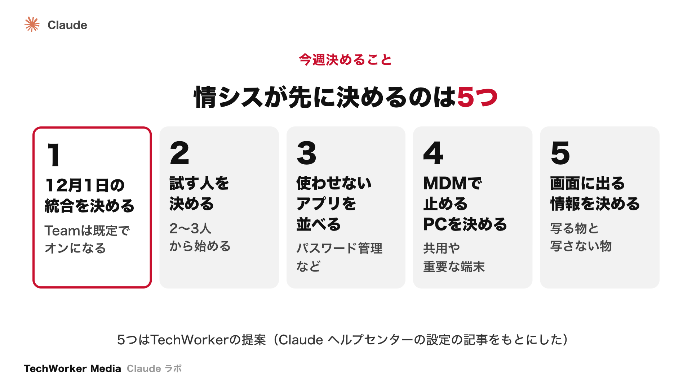

Anthropicは2026年11月20日、Claudeの「コンピューター操作（computer use）」をTeamとEnterpriseのプランでベータとして出しました。Claudeが社員の画面を見て、許可されたデスクトップのアプリをクリックと入力で操作する機能です。ブラウザなど一部のアプリでは、できる操作が限られます。
- 既定：オフです。組織のオーナーが組織設定の「Capabilities」でオンにするまで、社員は使えません。
- 前提：「Chat and Cowork unified」（チャットとCoworkを1つにした新しい体験）がオンの組織だけで動きます。Teamでは、この統合が2026年12月1日に既定でオンになります。
- 注意：Claudeとアプリの間に隔離された環境がありません。画面のスクリーンショットは会話と一緒に保存されます。
Claudeのヘルプセンターの設定の記事を2026年11月26日に読み、設定の名前と条件を確かめました。情シスが有効にする前に決めることをまとめます。
Claudeのコンピューター操作とは何ですか？
Claudeが社員のパソコンの画面を見て、社員が許可したアプリをクリックと入力で操作する機能です。TeamとEnterpriseでは2026年11月20日にベータになり、組織ごとに順に届いています。

リリースノートは次のように書いています。
原文“Computer use lets Claude see a user's screen and work in the desktop apps they allow.”
日本語訳コンピューター操作では、Claudeが利用者の画面を見て、利用者が許可したデスクトップのアプリで作業できます。
会社のプランで使える場所と、使えない場所は次のとおりです。
- Claude Desktop：macOS 14以降とWindowsで使えます。
- Web版とスマホのアプリ：組織の「Computer access」がオンで、Claude Desktopを開いたパソコンにつないだときに使えます。
- 使えない所：Claude Codeと、「Cowork」を選んで始めたタスクでは動きません。
「Computer use」と「Computer access」は別の設定です。Computer useは、Claudeが画面を見てアプリを操作する設定です。Computer accessは予約したタスクやWeb版、スマホのアプリから社員のパソコンを使う設定です。
会社で使えるようにするには、どこを設定しますか？
オーナーかプライマリーオーナーが組織設定の「Capabilities」で「Chat and Cowork unified」と「Computer use」の2つをオンにします。そのあと、社員が自分のClaude Desktopで「Enable computer use」をオンにします。

画面の名前は英語の表示のまま書きます。
- オーナーかプライマリーオーナーで、Claudeにログインします。
- 「Organization settings」（組織設定）の「Capabilities」（機能）を開きます。
- 「Chat and Cowork unified」がオンかを確かめます。オフのままでは動きません。
- 「Claude Desktop」の下にある「Computer use」をオンにします。Enterpriseで役割の一覧が開いたら、使わせない役割のチェックを外して「Turn on」を押します。
- 社員は最新のClaude Desktopで「Enable computer use」をオンにします。パソコンごと、アカウントごとの操作です。
設定が見当たらない、またはオンにできないときは、まだ自社の組織に届いていないか、対象外の組織です。次の構成の組織はオンにできません。
- HIPAA対応の構成（米国の医療情報の規則に合わせた構成）
- Claude Code向けのZero Data Retention（ZDR）
- 顧客が管理する暗号鍵（CMEK）
- FERPAやK-12（米国の教育向け）の設定
関係する設定を表にまとめました。
| 設定の名前 | 場所 | 役割 | 最初の状態 |
|---|---|---|---|
| Chat and Cowork unified | 組織設定 > Capabilities | チャットとCoworkを1つにした新しい体験。コンピューター操作の前提 | Teamは2026年12月1日に既定でオン |
| Computer use | 組織設定 > Capabilities > Claude Desktop | Claudeが画面を見てアプリを操作する | オフ |
| Computer access | 組織設定 > Capabilities | 予約したタスク・Web版・スマホから社員のパソコンを使う | 記載なし |
| App access | 組織設定 > Capabilities > Claude Desktop | 使わせないアプリ、または使ってよいアプリの一覧 | 一覧なし |
| computerUseEnabled | MDM（JamfやIntuneなど） | 選んだパソコンでコンピューター操作を止める | 配らない（MDMでの制限なし） |
出典：Claude Help Center「Set up computer use for Team and Enterprise plans」「Set up and manage the new unified Claude experience for your Team organization」（2026年11月26日確認）
Enterpriseでは役割ごとに使える人を絞れます。Teamには独自の役割がないため、オンにすると全員が対象になります。選んだパソコンで止めるには、後で述べるMDMの鍵を使います。User・Admin・Owner・Primary Ownerの役割の人は、オンにした時点で使えます。使わせない人は役割を「Custom」にし、15分待ってからオンにします。
追加の料金はかかりますか？
コンピューター操作だけの料金は設定の記事にも料金ページにも書かれていません。費用の基本は、TeamかEnterpriseの席の料金です。
日本から開いた料金ページの表示を、2026年11月26日に確かめました。ページの下に「Prices include 10% JCT」（消費税10%込み）と書かれています。
| プラン | 年払い（1席の月額） | 月払い（1席の月額） | 条件 |
|---|---|---|---|
| Team スタンダード | 22ドル | 27.50ドル | 2〜150名 |
| Team プレミアム | 110ドル | 137.50ドル | スタンダードの5倍の使用量 |
| Enterprise | 1席 月20ドル（年払い）＋APIの単価での使用量 | 20席から | |
出典：Claude「料金」のTeam & Enterpriseの表示（2026年11月26日確認）。Enterpriseの20ドルに消費税が含まれるかは、ページから読み取れません。Teamの年払いを10%の消費税で割り戻すと、税抜はスタンダードが20ドル、プレミアムが100ドルです
Teamのスタンダードを10人で年払いにすると、22ドル×10人×12か月で年2,640ドルです。1ドル155円と仮に置くと、約41万円です。為替は仮の値です。
統合の体験の記事は、コードを動かす作業やファイルを扱う作業は、短いチャットより席の使用量を多く使うと書いています。使用量のクレジットをオンにした組織では、超えた分が標準の単価で請求されます。組織の支出上限を設定していれば、請求はその上限までです。コンピューター操作の使用量の数え方は、公式に書かれていません。
人数と1人当たりの利用量から、Team・Enterprise・API従量の年額を出すExcelは、下の枠から受け取れます。
有効にする前に、何を確かめますか？
Claudeと社員のアプリの間に隔離がないこと、つないだフォルダの外のファイルも触れること、スクリーンショットが会話と一緒に残ることの3つです。
原文“Computer use has no sandbox between Claude and a user's applications.”
日本語訳コンピューター操作には、Claudeと利用者のアプリの間にサンドボックス（隔離された環境）がありません。
- 隔離がない：画面に出たWebページやメールの中身で、Claudeが意図しない操作をするおそれがあると、設定の記事は書いています。
- フォルダの外：社員が許可したアプリを通して、つないだフォルダの外のファイルを開き、変え、消せます。フォルダの制限や「Read only」の指定も、コンピューター操作には効きません。
- スクリーンショット：Claudeは画面を見るためにスクリーンショットを撮り、会話と一緒に保存します。個人情報や秘密の情報が写ることがあります。
- 点検の記録：Claudeの操作を確かめる自動の点検も、最新のスクリーンショットを見られます。Anthropicはその点検の記録に写しを残すことがあります。この点検は「Automatically approve」のモードで動くと、利用者向けの記事は書いています。
利用者向けの記事「Let Claude use your computer in Cowork」によると、Anthropicのシステムは、Claudeが画面を使う間にプロンプトインジェクションの兆しを調べています。画面の文に紛れた指示で、AIの操作を乗っ取る攻撃のことです。同じ記事は、この機能はまだ初期で攻撃も変わり続けるので、注意して使うよう書いています。
社員が会社の許可なく個人のAIを使う問題は、「シャドーAIとは」で扱っています。
使わせるアプリを絞るには、どうしますか？
「App access」で、使わせない一覧の「Block these apps」か、使ってよい一覧の「Allow only these apps」を選びます。何も設定しなくても、ブラウザや投資のアプリなどには最初から制限があります。

Claudeはアプリを使う前に1つずつ社員の許可を求めます。そのうえで、アプリの種類ごとに次の制限があります。
| アプリ | Claudeができること |
|---|---|
| ブラウザ、投資・取引・暗号資産の多くのアプリ | 画面は見えるが、クリックも入力もできない |
| ターミナルとコードエディタ | クリックとスクロールはできる。入力はできない。クリックでコードが動くことはある |
| 音楽、動画配信、電子書籍などのアプリ | 使えない |
| そのほかの大半のアプリ | すべての操作ができる |
出典：Claude Help Center「Let Claude use your computer in Cowork」（2026年11月26日確認）
会社でさらに絞るときの手順です。変えられるのはオーナーかプライマリーオーナーだけです。
- 組織設定の「Capabilities」を開き、「Claude Desktop」の「Computer use」の下にある「App access」を探します。
- 「Block these apps」か「Allow only these apps」を選び、「Add app」を押します。
- 一覧から選ぶか、一覧にないアプリはIDを入れます。Macは「com.microsoft.Excel」のようなバンドルID、Windowsは「excel.exe」のようなファイル名です。
- 「Done」を押します。各社員のClaude Desktopに届くまで、約1時間、ときにはそれ以上かかることがあります。その間は、外したばかりのアプリもClaudeが使えます。
一覧は社員のパソコンに送られます。社員には表示されませんが、見つけることはできるため、秘密の情報を書かないよう記事は求めています。入力したIDが本物のアプリかは、確かめられません。
一覧が効かない範囲もあります。Claude in Chrome、組み込みのブラウザ、Claude Code、デスクトップの拡張機能です。ほかに、個人のアカウントへの切り替え、ブラウザの中のWebサイトと拡張機能、リモートデスクトップや仮想マシンの中のアプリも対象外です。使わせないアプリからコピーした文も、Claudeは読めます。
特定のパソコンで止めるには、どうしますか？
JamfやIntuneなどのMDMで、Claude Desktopのポリシーの鍵「computerUseEnabled」をfalseにして、パソコン単位で配ります。Claude Desktop 5.1231.0以降が必要です。
- Mac：設定のドメイン「com.anthropic.claudefordesktop」の構成プロファイルで、computerUseEnabledをfalseにします。
- Windows：「HKEY_LOCAL_MACHINE\SOFTWARE\Policies\Claude」に、computerUseEnabledを値0のDWORDで置きます。
- 配る単位：利用者ではなくパソコンの単位で配ります。利用者の単位ではその1人にしか効きません。
- 反映：Claude Desktopを終了して開き直したときに効きます。窓を閉じるだけでは効きません。
効いたかはそのパソコンのClaude Desktopの「Settings」で確かめます。「Enable computer use」が灰色になり、組織がこのパソコンでの利用を止めたという文が出ます。
Windowsでは、古いバージョンのClaude Desktopが、この鍵しか置かれていないポリシー全体を受け付けないことがあると、記事は警告しています。先にClaude Desktopを全台で更新します。
この鍵を置いたパソコンは、Claude Desktopから管理対象として扱われます。利用者は更新の経路（リリースチャネル）を選べなくなり、利用者の単位に置いたほかのClaudeの設定も読まれなくなります。ほかの設定も、パソコンの単位に移します。
この鍵は「Record a skill」、Claude in Chrome、組み込みのブラウザ、ターミナルのClaude Code、ローカルのMCPサーバー、デスクトップの拡張機能には効きません。パソコンの設定を変えられる人を止める鍵ではない、とも書かれています。
Claude Desktopの管理設定の配り方は、「Claude Codeの社内展開」でも扱っています。
12月1日に何が変わりますか？
Teamの組織では、「Chat and Cowork unified」が2026年12月1日に既定でオンになります。コンピューター操作は別の設定で、最初の状態はオフです。
原文“It turns on by default on December 1, 2026, unless an owner keeps it off.”
日本語訳（新しい統合の体験は）オーナーがオフのままにしない限り、2026年12月1日に既定でオンになります。
- 止める方法：オフのままにするには、12月1日より前に、組織設定の「Capabilities」で「Keep disabled」を選びます。
- 前提の設定：「Cloud code execution and file creation」がオフの組織では、案内も出ず、何もオンになりません。ただし12月1日以降は、その設定をオンにした時点で新しい体験もオンになります。
- 選んだ組織：すでにオンかオフを選んだ組織は、その選択が続きます。
- 2027年2月1日：チャットとCoworkが別々の今の体験は終わり、残った利用者は自動で新しい体験に移ります。
統合の後は利用状況のレポートの行も変わります。チャットとCoworkの使用量は「Chat and Cowork unified」の行に入ります。支出や使用量を足すときは、この行も含めるよう記事は求めています。ZDRの組織には、これらの日付は当てはまりません。Enterpriseの扱いは別の記事にあり、本記事では確かめていません。
情シスが今週決めることは何ですか？
12月1日の統合を受けるか、誰に試させるか、使わせないアプリ、MDMで止めるパソコン、画面に写してよい情報の5つです。

- 12月1日の統合を決める：Teamの組織は新しい体験を受けるか「Keep disabled」にするかを、11月中に決めます。
- 試す人を決める：最初は2〜3人に絞ります。Enterpriseは役割で絞れます。Teamは組織設定で人を絞れません。社員が自分でオンにするまでは使えないので、試す人を社内ルールで決め、止めたいパソコンにはMDMの鍵を配ります。
- 使わせないアプリを並べる：パスワード管理、会計、顧客の個人情報を扱うアプリなどを、App accessの一覧に入れます。
- MDMで止めるパソコンを決める：共用のパソコンや、重要な情報を扱うパソコンを先に決めます。
- 画面に出る情報を決める：スクリーンショットが会話と一緒に残る前提で、使ってよい業務の範囲を社内ルールに書きます。
5つはTechWorkerの提案です。Enterpriseの管理機能の全体は、「Claude Enterpriseのセキュリティセンター」で解説しています。
よくある質問
使えます。Pro・Max・Ultraでは、macOSとWindowsのClaude Desktopで、CoworkとClaude Codeの中で使えます。TeamとEnterpriseでは新しい統合の体験でだけ動き、オーナーがオンにするまで使えません。
使えません。TeamとEnterpriseでは、Claude Codeと、「Cowork」を選んで始めたタスクでは動かないと、設定の記事に書かれています。
会話と一緒に保存されます。Claudeの操作を確かめる自動の点検も最新のスクリーンショットを見られ、Anthropicはその点検の記録に写しを残すことがあります。保存の期間は設定の記事に書かれていません。
すぐには止まりません。各社員のClaude Desktopに届くまで約1時間、ときにはそれ以上かかります。その間、Claudeは画面を見て、許可済みのアプリを使えます。
使えます。組織の「Computer access」の設定がオンで、Claude Desktopを開いたパソコンに会話をつないでいることが条件です。Web版では「＋」の「Devices」からパソコンを選びます。
次の一歩は何から始めればよいですか？
組織設定の「Capabilities」を開き、今の状態を確かめることから始めます。
- 「Chat and Cowork unified」と「Computer use」が今オンかオフかを確かめます。
- Teamの組織は12月1日の前に統合を受けるかを決めます。
- 使わせないアプリの一覧を作ってから、2〜3人で試します。
TechWorkerの研修では、受講者の実際の業務1本について、Claudeに任せる手順と確かめる手順を当日に作ります。30日後に、使った人の割合と1件にかかる時間を測って報告します。検討段階のご相談だけでも歓迎です。
出典と確認範囲
確認日：2026年11月26日。ヘルプセンターの記事は更新日を「Updated this week」などで示しています。暦の日付は出ていません。TechWorkerの組織ではコンピューター操作をまだ有効にしておらず、動作は確かめていません。スクリーンショットの保存の期間、コンピューター操作の使用量の数え方、日本語の画面での表示名は、公式に書かれていません。Enterpriseの統合の体験の記事は読んでいません。情シスが決める5つはTechWorkerの提案です。
- Claude Help Center「Release notes」（2026年11月20日の項）
- Claude Help Center「Set up computer use for Team and Enterprise plans」（2026年11月26日確認）
- Claude Help Center「Let Claude use your computer in Cowork」（2026年11月26日確認）
- Claude Help Center「Use Claude Cowork safely」（2026年11月26日確認）
- Claude Help Center「Set up and manage the new unified Claude experience for your Team organization」（2026年11月26日確認）
- Claude「料金」Team & Enterprise（日本からの表示、2026年11月26日確認）